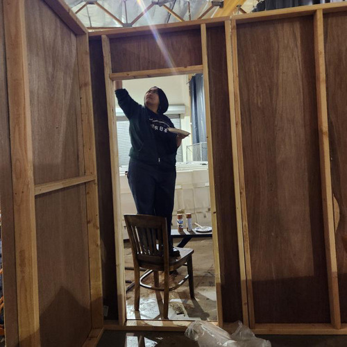
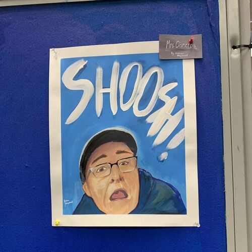
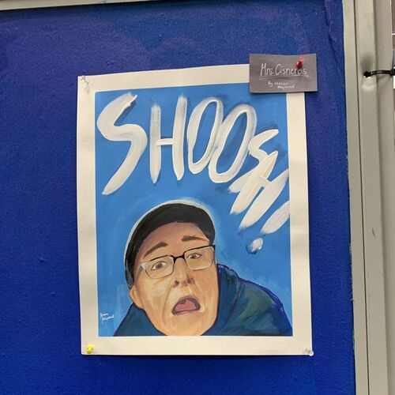
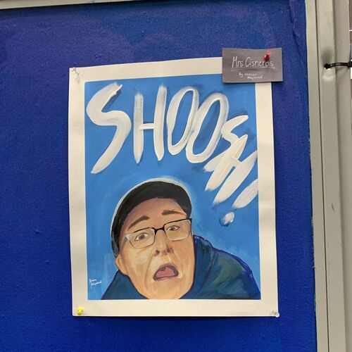

Mason Mapalad
Mason Mapalad is a student at the University of California, Riverside, who is expected to graduate in June of 2027. He graduated from Great Oak High School (GOHS) in 2023 with a 4.0 GPA and also achieved a Golden State Seal Diploma, which demonstrates mastery in six high-school level subjects, including Math, English, Science, and U.S. History.
Previously, Mason held the position of secretary in GOHS' Gay Straight Alliance (GSA) from August 2022 to June 2023. As secretary, he helped collect and present information regarding several LGBTQ+ figures, identities, and recent news. Additionally, he also contributed to the development of a welcoming and safes environment for both queer and straight students to meet.
Additionally, Mason was also a member of GOHS' National Art Honor Society (NAHS). As a member of NAHS, he contributed to the club’s funds by creating pieces of art to be potentially sold. The club itself also facilitated several volunteering opportunities for its members, such as assisting with the decoration of background materials for local productions of plays or, most notably, painting a mural to be displayed by the city of Temecula.
Mason possesses several skills regarding Google Workspace. Particularly, he is knowledgeable regarding Google Docs and Google Slides. Additionally, Mason has experience with digital art. Specifically, he is proficient in the software Clip Studio Paint. Within art, he is familiar with several techniques and methods, from painting to graphic design.
Experience
Secretary
• Gathered, checked the accuracy of, and presented educational information about LGBTQ+ figures, identities, and news.
• Contributed to the development of a welcoming environment for LGBTQ+ students facing discrimination.
• Facilitated the interactions of straight and LGBTQ+ students in a way that maintained respect and safety for each party.
Club Member
• Produced artwork to be possibly sold to fund the club.
• Participated in volunteering opportunities centered around the production of art.
Ensemble
• Peformed as a background supporting role in a school production of "Mamma Mia!", a musical.
• Practiced singing and dancing after school and during the weekends in order to ensure fluidity of performance.
Education
University of California, Riverside
Portfolio


 

